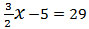

การแก้สมการ คือการหาคำตอบของสมการ นักเรียนเคยหาคำตอบของสมการ โดยวิธีลองแทนค่าในสมการเพื่อให้สมการนั้นเป็นจริงมาแล้ว นักเรียนอาจมีปัญหาในการใช้วิธีนี้ เมื่อสมการมีความซับซ้อนมากขึ้น เช่น เมื่อต้องการหาคำตอบของสมการ 
โดยวิธีลองแทนค่าตัวแปรในสมการ
ซึ่งนักเรียนจะพบว่าเป็นการยากที่จะหาคำตอบของสมการได้เป็น
เพื่อความรวดเร็วในการหาคำตอบของสมการ เราจะใช้สมบัติของการเท่ากันในการหาคำตอบ
สมบัติสมมาตร
เรามีวิธีการเขียนแสดงการเท่ากันของจำนวนสองจำนวนได้สองแบบ เช่น
1. x = 9 หรือ 9 = x
2. a + b = c หรือ c = a + b
3. -4 = -2x หรือ -2x = -4
4. x - 3 = 4x + 2 หรือ 4x + 2 = x - 3
5. m + n หรือ n + m
จากการเขียนแสดงการเท่ากันข้องต้นเป็นไปตาม สมบัติสมมาตร ซึ่งกล่าวได้ว่า

สมบัติการถ่ายทอด
นักเรียนเคยใช้สมบัติของการเท่ากันเพื่อให้ได้ข้อสรุป เช่น
1. ถ้า x = y และ y = 3 แล้วจะสรุปได้ว่า x = 3
2. ถ้า a + b = x และ x = 7 แล้วจะสรุปได้ว่า a + b = 7
3. ถ้า B = k ⨉ m และ k ⨉ m = a แล้วจะสรุปได้ว่า B = a
จากการใช้สมบัติของการเท่ากันข้างต้นเป็นไปตาม สมบัติถ่ายทอด ซึ่งกล่าวได้ว่า
สมบัติการบวก
ถ้ามีจำนวนสองจำนวนเท่ากัน เมื่อนำจำนวนอีกจำนวนหนึ่งมาบวกแต่ละจำนวนที่เท่ากันนั้น แล้วผลลัพธ์จะเท่ากัน เช่น
1. 3 ⨉ 3 = 9 แล้ว (3 ⨉ 3) + (-6) = 9 + (-6)
2. ถ้า a = 7 แล้ว a + 11 = 7 + 11
3. ถ้า b + 4 = 10 แล้ว (b+4) + (-3) = 10 + (-3)
4. ถ้า x = y แล้ว x + z = y + z เมื่อ z แทนจำนวนใดๆ
จากการใช้สมบัติของการเท่ากันข้างต้นเป็นไปตาม สมบัติการบวก ซึ่งกล่าวได้ว่า

จำนวนที่นำมาบวกกันแต่ละจำนวนที่เท่ากันนั้น อาจจะเป็นจำนวนบวกหรือจำนวนลบก็ได้ ในกรณีที่บวกด้วยจำนวนลบ
มีความหมายเหมือนกับนำจำนวนบวกมาลบออกจากจำนวนทั้งสองข้างของสมการ คือ
ถ้า a = b แล้ว a + (-c) = b + (-c) หรือ a - c = b - c เมื่อ a
, b และ c แทนจำนวนใดๆ นั่นคือ
สมบัติการคูณ
ถ้ามีจำนวนสองจำนวนเท่ากัน เมื่อนำจำนวนอีกจำนวนหนึ่งคูณกับแต่ละจำนวนที่เท่ากันนั้น แล้วผลลัพธ์จะเท่ากัน เช่น
1. ถ้า m = n แล้ว 3m = 3n
2. ถ้า x = y แล้ว ax = ay
3. ถ้า a = b แล้ว
4. ถ้า และ y ≠ 0 แล้ว x = yz
จากการใช้สมบัติของการเท่ากันข้างต้นเป็นไปตาม สมบัติการคูณ ซึ่งกล่าวได้ว่า
จำนวนที่นำมาคูณกับจำนวนสองจำนวนที่เท่ากันนั้น อาจจะเป็นจำนวนเต็มหรือเป็นเศษส่วนก็ได้ เช่น
ตัวอย่าง 1 จงแก้สมการ x – 18 = 35
วิธีทำ 1) x – 18 = 35
นำ 18 มาบวกทั้งสองข้างของสมการ
จะได้ x – 18 + 18 = 35 + 18
หรือ x = 53
ตรวจสอบ แทน x ด้วย 53 ในสมการ
x – 18 = 35
จะได้ 53 – 18 = 35 เป็นสมการที่เป็นจริง
ดังนั้น 53 เป็นคำตอบของสมการ x –18 = 53
เรื่องโจทย์ปัญหาเกี่ยวกับสมการเชิงเส้นตัวแปรเดียว
การแก้โจทย์ปัญหาเกี่ยวกับสมการเชิงเส้นตัวแปรเดียว คือ กระบวนการวิเคราะห์และดำเนินการหาสิ่งที่โจทย์ปัญหาเกี่ยวกับสมการเชิงเส้นตัวแปรเดียวต้องการให้หา
เราสามารถนำความรู้เรื่องการแก้โจทย์ปัญหาเกี่ยวกับสมการเชิงเส้นตัวแปรเดียว และตระหนักถึงความสมเหตุสมผลของคำตอบที่ได้ไปใช้ในชีวิตประจำวันได้
ตัวอย่างที่ 1 เศษหนึ่งส่วนหน้าของจำนวนจำนวนหนึ่งมีค่าเท่ากับ 20 จงหาจำนวนนั้น